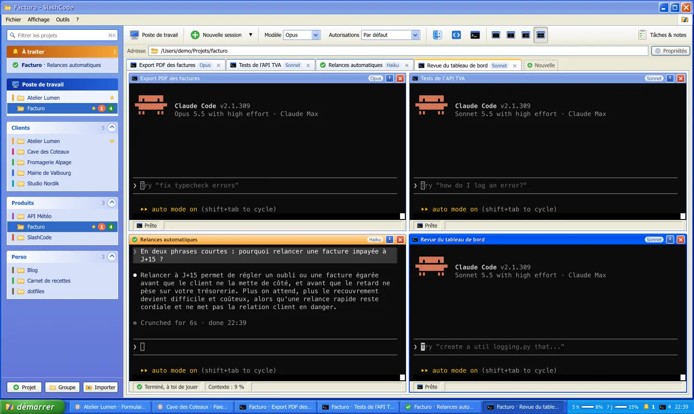
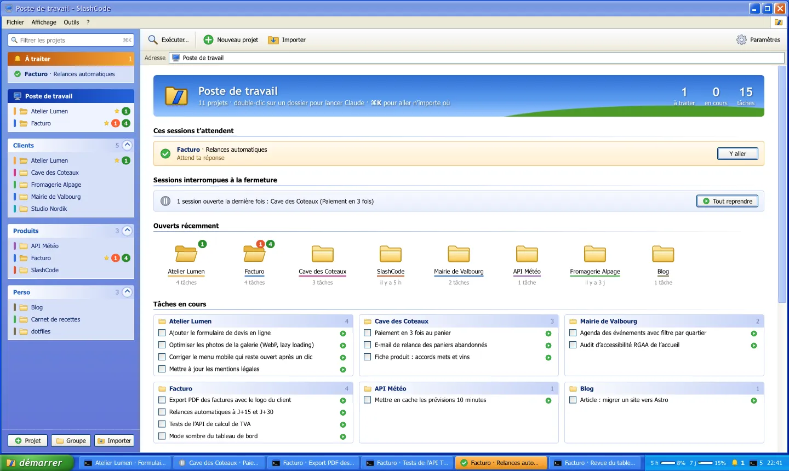
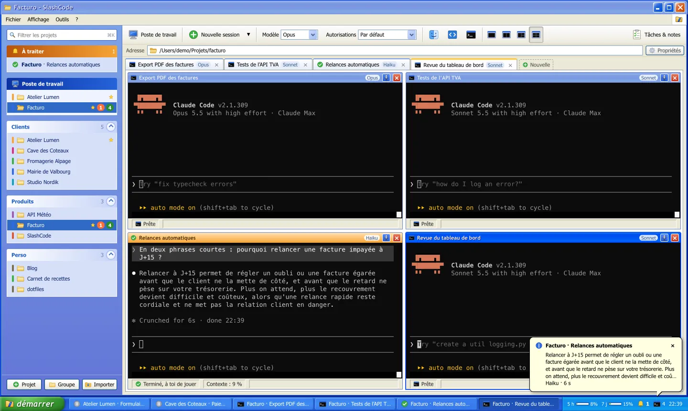
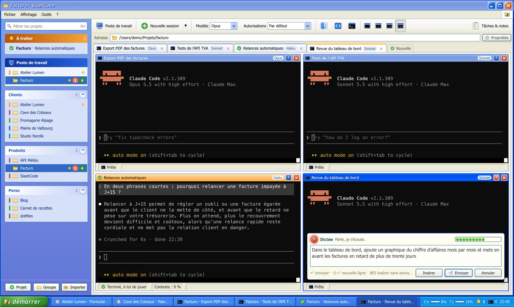
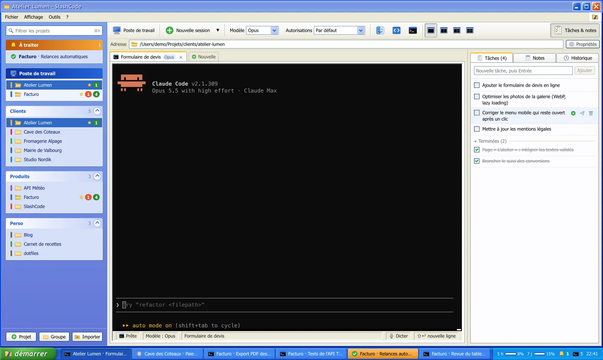
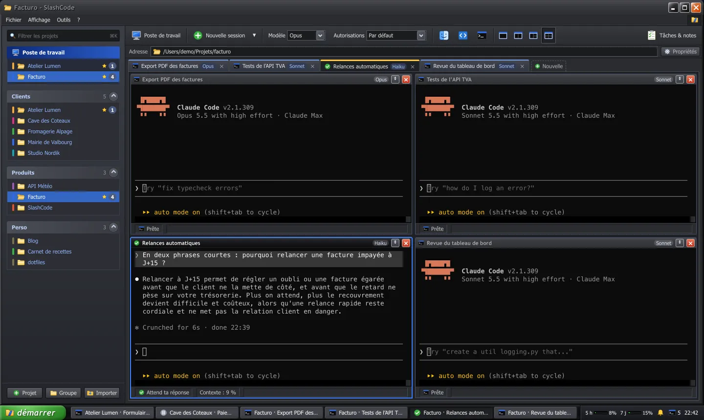

Tes sessions Claude Code, rangées comme sur ton bureau.
SlashCode est un organisateur gratuit pour Mac. Chaque projet garde ses terminaux Claude, ses tâches, ses notes et son historique, et l'app te prévient dès que Claude t'attend. Le tout dans un Windows XP redessiné à la main.
Version 0.1.0. Mac Apple Silicon (M1 et suivants), avec Claude Code installé.

Visite guidée de SlashCode
AdressePoste de travail\Visite guidée
Un dossier par projet, des groupes pour s'y retrouver
Clients, Produits, Perso : tu crées les groupes qui te ressemblent et tu y ranges tes dossiers de travail. Le Poste de travail montre d'un coup d'œil ce qui tourne, ce qui attend et ce qui reste à faire.

Import en un clicAu premier lancement, SlashCode liste tous les dossiers où Claude Code a déjà servi.
Glisser, déposerUn dossier du Finder lâché sur un groupe devient un projet. Favoris, couleurs et archives en plus.
Exécuter… avec ⌘KTape trois lettres, tu es dans le bon projet ou la bonne session.
De vrais terminaux, jusqu'à quatre à l'écran
Chaque session est un vrai terminal qui lance claude : toutes les fonctions du CLI restent là. Double-clic sur un projet et Claude démarre dans le bon dossier.
Écran partagé1, 2, 3 ou 4 sessions à la fois avec ⌥⌘1 à ⌥⌘4. Chaque volet est une petite fenêtre avec sa barre de titre.
Le bon modèle en un clicFable, Opus, Sonnet ou Haiku, avec un modèle et un mode d'autorisation par défaut propres à chaque projet.
Tout reprendreAprès un redémarrage, un bouton relance chaque conversation là où elle s'était arrêtée.
Claude t'attend ? Tu le sais tout de suite.
Quand Claude demande une autorisation ou a fini son tour, SlashCode te le dit : notification macOS, bulle dans la barre des tâches, bouton qui clignote en orange, badge sur l'icône du Dock. Le message dit quoi : la commande à autoriser, ou le début de la réponse.
La bulle s'affiche en bas à droite, comme dans l'app.

Aussi sur l'iPhoneAvec Bark ou ntfy, et seulement quand tu n'es pas devant le Mac (écran verrouillé ou deux minutes sans activité).
Ta config Claude reste intacteSlashCode passe ses hooks à chaque session, sans toucher à tes réglages.
⌘⇧A pour y allerSaute directement à la prochaine session qui attend une réponse.
Parle à Claude, il t'écoute
Appuie sur ⌘D et parle : le texte s'affiche en direct, tu le corriges si besoin, ↩ l'envoie à Claude et ⌘D l'insère sans l'envoyer. Sur macOS 26, la reconnaissance vocale d'Apple tourne entièrement sur le Mac, sans Siri ni connexion.

Tes idées à côté de Claude, pas dans un autre logiciel
Chaque projet a sa liste de tâches, ses notes et l'historique de ses conversations, dans un panneau qui s'ouvre avec ⌘J.

Tâches par projet▶ lance une tâche comme premier message d'une nouvelle session, ➤ l'écrit dans la session active. Coller plusieurs lignes crée une tâche par ligne.
NotesEnregistrées toutes seules, envoyables à Claude d'un clic.
HistoriqueToutes les conversations Claude du dossier, reprises en un clic.
Royale Noir, pour les soirées longues
Le thème noir de l'époque, refait pour SlashCode. Choisis clair, sombre ou comme macOS dans Paramètres, Apparence.

6 chapitresPoste de travail
Assistant Installation de SlashCode
Installer SlashCode en quatre étapes
Ce qu'il te faut
Un Mac avec une puce Apple (M1 ou plus récent).
Le CLI Claude Code installé : la commande claude doit marcher dans le Terminal.
Ton compte Claude habituel. SlashCode n'ajoute aucun abonnement.
Télécharge l'app
Prends le fichier .zip de la dernière version sur GitHub, ouvre-le, puis glisse SlashCode.app dans ton dossier Applications.
Au premier lancement, SlashCode liste les dossiers où tu as déjà utilisé Claude Code. Coche ceux que tu veux, range-les dans des groupes, et double-clique sur un projet pour lancer Claude.
C'est installé. Bonne session.
Compiler depuis les sources
# Il faut Node.js 22+ et les outils Xcode.
git clone https://github.com/ArchSeraphin/slashcode.git
cd slashcode
npm install
npm run dist
codesign --force --deep -s - dist/mac-arm64/SlashCode.app
cp -R dist/mac-arm64/SlashCode.app /Applications/
Propriétés du clavier
Raccourcis
Moins de clics, plus de Claude
⌘K
Aller à un projet ou une session
⌘T
Nouvelle session dans le projet ouvert
⌘⇧A
Prochaine session qui attend
⌘1 à ⌘9
N-ième onglet du projet
⌥⌘1 à ⌥⌘4
1, 2, 3 ou 4 sessions à l'écran
⌘D
Dicter un prompt
⌘J
Afficher Tâches et notes
⌘W
Fermer la session active
Offrir un café
SlashCode est gratuit.
Pas de version payante, pas de compte, pas de publicité. Si l'app te fait gagner du temps, tu peux offrir un café à celui qui l'a construite. Ça finance les soirées passées à redessiner des boutons de 2001.
Une étoile, un retour ou un bug signalé, ça aide aussi.
Aide et support
Questions fréquentes
C'est vraiment gratuit ?
Oui, pour un usage personnel, les études, la recherche, les associations et les organismes publics. SlashCode est publié sous licence PolyForm Noncommercial 1.0.0 : tu peux lire, modifier et partager le code. Pour l'utiliser dans une entreprise à but lucratif, demande une licence en ouvrant une issue.
Il faut un abonnement Claude ?
SlashCode lance le CLI Claude Code que tu as déjà, avec ton compte. Il ne remplace rien et ne revend rien : il range tes sessions.
Ça marche sur Windows ou sur un Mac Intel ?
Pas pour l'instant : SlashCode tourne sur les Mac à puce Apple. Le style rappelle Windows XP, mais c'est bien une app Mac.
SlashCode modifie-t-il ma configuration Claude ?
Non. Les notifications passent par des hooks donnés à chaque session avec --settings. Ils préviennent un petit serveur local de l'app, protégé par un jeton aléatoire. Ton fichier de réglages Claude n'est jamais modifié.
Où vont mes données ?
Nulle part : projets, tâches et notes restent sur ton Mac, dans ~/Library/Application Support/SlashCode. Seule exception, les notifications iPhone si tu les actives : elles passent par Bark ou ntfy, et tu peux héberger ton propre serveur Bark.
Pourquoi Windows XP ?
Parce que des dossiers jaunes dans des fenêtres bleues, avec une barre des tâches qui clignote quand quelqu'un t'attend, c'est exactement ce qu'il faut pour suivre six sessions à la fois. Le thème est redessiné à la main, sans aucun élément graphique de Microsoft.